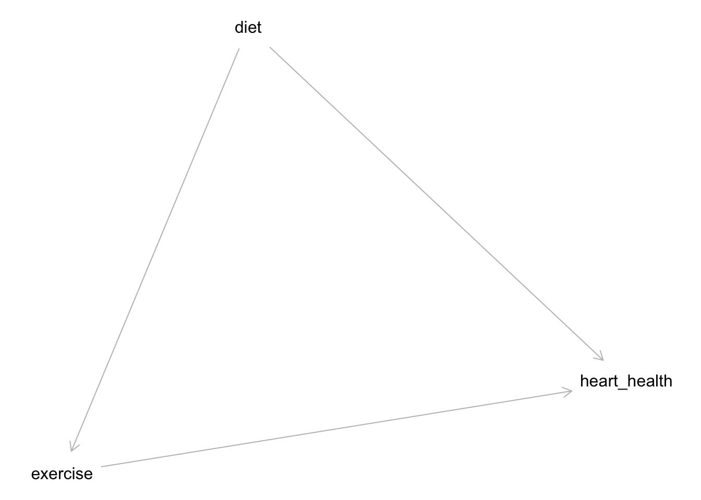

4 Effect Modification and Interaction
Class materials
Slides: Module 4
Recording: Module 4, Part 1
Recording: Module 4, Part 2
Textbook reading
Supplementary reading
Freedman, D. A. (2008). On types of scientific inquiry: The role of RCTs in health policy. Journal of the Royal Statistical Society: Series A, 171(2), 359–385. Examples of quasi-experiments from public health and education
Topics covered
- Effect modification and adjustment methods
- Identifying interaction
- Effect modification vs interaction
- Critical reading exercise: evaluating effect modification and interaction in studies
4.1 Effect Modification and Adjustment Methods
Effect modification occurs when the effect of an exposure on an outcome differs depending on the level of another variable. Unlike confounding, which biases the estimated effect, effect modification reflects a real variation in the causal effect across different subgroups. Recognizing effect modification is important because it can reveal that a treatment or exposure is beneficial for some groups but not for others. Adjustment methods like stratification or including interaction terms in regression models help detect and describe effect modification rather than “control” it away.
Adjustment methods typically aim to control for confounding, but they can also be used to detect effect modification when interaction terms are included. When effect modification is present, a single summary effect estimate (like an overall average) can be misleading. Instead, researchers often report subgroup-specific effects. Careful modeling and interpretation are necessary to distinguish between true effect modification and residual confounding.
Simulation to Demonstrate Effect Modification
We simulate a case where heart transplant improves survival, but the effect of transplant is stronger for individuals who receive vitamin supplements. That is, vitamin supplementation modifies the effect of transplant on survival. This reflects a scenario where a treatment (transplant) has a greater benefit under certain conditions (when the body is supported by vitamins), illustrating effect modification.
n <- 2000
A <- rbinom(n, 1, 0.5) # heart transplant
E <- rbinom(n, 1, 0.5) # vitamin
survival <- 1 * A + 2 * E + 3 * (A * E) + rnorm(n, mean = 0, sd = 1)
df <- data.frame(survival, A, E)
naive_model <- lm(survival ~ A + E, data = df)
adjusted_model <- lm(survival ~ A + E + A * E, data = df)
summary(naive_model)##
## Call:
## lm(formula = survival ~ A + E, data = df)
##
## Residuals:
## Min 1Q Median 3Q Max
## -3.9644 -0.8594 -0.0175 0.8941 3.5872
##
## Coefficients:
## Estimate Std. Error t value Pr(>|t|)
## (Intercept) -0.74093 0.04832 -15.34 <2e-16 ***
## A 2.55081 0.05510 46.29 <2e-16 ***
## E 3.43272 0.05510 62.29 <2e-16 ***
## ---
## Signif. codes: 0 '***' 0.001 '**' 0.01 '*' 0.05 '.' 0.1 ' ' 1
##
## Residual standard error: 1.231 on 1997 degrees of freedom
## Multiple R-squared: 0.7455, Adjusted R-squared: 0.7453
## F-statistic: 2925 on 2 and 1997 DF, p-value: < 2.2e-16##
## Call:
## lm(formula = survival ~ A + E + A * E, data = df)
##
## Residuals:
## Min 1Q Median 3Q Max
## -3.7688 -0.6833 -0.0006 0.6350 3.0543
##
## Coefficients:
## Estimate Std. Error t value Pr(>|t|)
## (Intercept) 0.01795 0.04520 0.397 0.691
## A 1.07056 0.06313 16.959 <2e-16 ***
## E 1.97857 0.06257 31.623 <2e-16 ***
## A:E 2.92352 0.08872 32.954 <2e-16 ***
## ---
## Signif. codes: 0 '***' 0.001 '**' 0.01 '*' 0.05 '.' 0.1 ' ' 1
##
## Residual standard error: 0.9913 on 1996 degrees of freedom
## Multiple R-squared: 0.8352, Adjusted R-squared: 0.835
## F-statistic: 3372 on 3 and 1996 DF, p-value: < 2.2e-16The plot shows that heart transplants improve survival more for individuals who received vitamins, illustrating effect modification by vitamin status.
# library(ggplot2)
# library(dplyr)
df_grouped <- df |>
mutate(vitamin_group = ifelse(E == 1, "Vitamins", "No Vitamins"))
ggplot(df_grouped, aes(x = A, y = survival, color = vitamin_group)) +
geom_jitter(width = 0.1, alpha = 0.4) +
stat_summary(fun = mean, geom = "point", size = 3, shape = 18) +
stat_summary(fun = mean, geom = "line", aes(group = vitamin_group)) +
scale_x_continuous(breaks = c(0, 1)) +
labs(title = "Effect Modification: Heart Transplant × Vitamin Supplement",
x = "Heart Transplant (A)",
y = "Survival",
color = "Vitamin Group") +
theme_minimal()
In this simulation, the benefit of heart transplant on survival is stronger for individuals who received vitamin supplements. A naive model without an interaction term fails to capture this difference and instead estimates an average effect across all individuals. By including an interaction term between transplant and vitamins, we reveal that the effect of transplant varies depending on vitamin use. The plot illustrates how survival is influenced not just by transplant alone, but by how vitamins modify its impact — highlighting the importance of detecting and modeling effect modification in public health research.
4.2 Identifying Interaction
Identifying interaction is crucial when studying causal relationships because it tells us whether the effect of an exposure on an outcome varies across levels of another variable. An interaction exists when the impact of one variable depends on the value of another, meaning the combined effect is not simply additive. Rather than being a source of bias like confounding, interaction reveals real differences in how subgroups respond to exposures or treatments. Detecting interaction helps researchers understand for whom and under what conditions an intervention works best, allowing for more tailored public health strategies and clinical recommendations.
In our simulation with heart transplant and vitamin supplements, interaction was present because the benefit of transplant on survival was greater for individuals who received vitamins. By fitting a model with an interaction term between transplant and vitamin use, we were able to identify and quantify this effect modification. Without testing for interaction, we would have incorrectly assumed that transplant provides the same benefit to everyone, masking important subgroup differences. Identifying interaction allows us to uncover nuanced causal relationships that average treatment effects alone may overlook.
4.3 Effect Modification vs Interaction
Effect modification and interaction are closely related concepts, but they serve slightly different purposes in causal analysis. Effect modification refers to a real difference in the causal effect of an exposure on an outcome across levels of another variable. It describes a biological or contextual phenomenon where an exposure has varying impacts depending on a modifier, such as a treatment working better for younger patients than older ones. In contrast, interaction is a modeling term: it refers to the inclusion of a product term (like exposure × modifier) in a statistical model to detect and estimate effect modification. In essence, effect modification is a feature of reality, while interaction is how we model and identify it in data.
In our simulation with heart transplant and vitamin supplements, the true underlying process involved effect modification: the benefit of transplant on survival was greater for individuals who received vitamins. To uncover this, we included an interaction term between transplant and vitamin use (A * E) in our regression model. Without this interaction, the model would have incorrectly assumed a constant effect of transplant across all patients, regardless of vitamin status. This distinction underscores the importance of modeling interactions when effect modification is suspected — otherwise, meaningful subgroup differences in treatment effects can be obscured by oversimplified models.